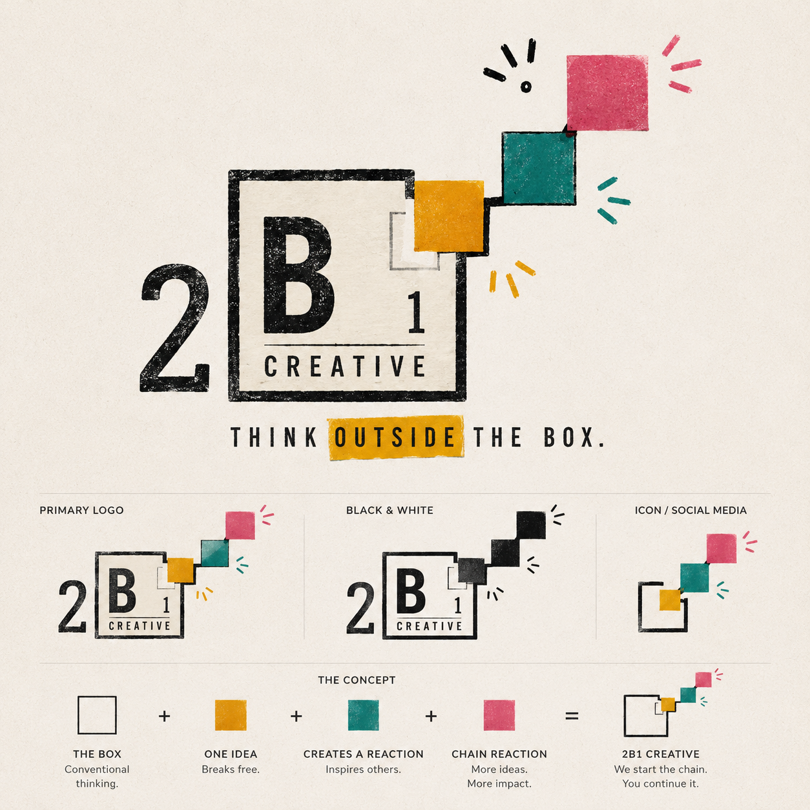

One idea breaks free.
The first square escapes the box. One thought challenges what was expected.

The Heart Behind 2B1 Creative
And sometimes, that idea begins as a sketch in a notebook, a question nobody else is asking, or a decision to stop doing things the way they have always been done.
Who We Are
It was built from a belief we carry into everything we do:
The best solutions rarely come from thinking inside the box.
We help businesses grow through creative strategy, storytelling, marketing, AI, automation, content creation, and innovative problem solving. But underneath all of that, our real work is helping people see possibility where they may have only seen limitation.
The Founder Story
Our founder, Ismeli Henriquez, started her journey in film and television, where she fell in love with storytelling, emotion, characters, and the way a single story could make someone feel seen.
That love for storytelling eventually made its way into social media. Over nearly a decade, Ismeli built a personal audience of more than 100,000 followers while working with brands as a creator, content producer, and UGC partner.
But somewhere along the way, something unexpected started happening.
Brands were not only asking her to create content. They were asking for advice. They wanted to know why certain ideas worked, why some campaigns connected, why others did not, and how they could build stronger relationships with their audiences.
Ismeli found herself consulting brands more and more, helping them understand their messaging, their content, their offers, their customer journey, and the opportunities they were overlooking.
And the more she helped, the more she realized this was not just about making content. It was about being part of a brand’s growth story. It was about helping good businesses find their voice, share their vision, and reach more people.
That is how 2B1 Creative was born.
The Meaning Behind The Logo
The box represents conventional thinking. Industry norms. Expected solutions. The way things have always been done.
Inside the box sits the B1 element, inspired by the appearance of a periodic table element. That choice was intentional.
Just as elements combine to create entirely new reactions, ideas combine to create entirely new possibilities.
Creativity is chemistry. Innovation is experimentation.
The Chain Reaction
The colored squares emerging from the box are not decorative. They represent ideas breaking free from conventional thinking.
The first square escapes the box. One thought challenges what was expected.
That single act creates momentum. It encourages new questions and new possibilities.
One person thinking differently encourages others to do the same.
What Creativity Means To Us
To us, creativity is not limited to design, videos, branding, or aesthetics.
Creativity is problem solving.
It is curiosity.
It is experimentation.
It is allowing your mind to explore what else could be possible.
That is what we lead with at 2B1 Creative: trying new ideas, thinking outside the box, and helping other people share their visions, dreams, ideas, and solutions with more people.
Sometimes the solution is marketing.
Sometimes it is automation.
Sometimes it is AI.
Sometimes it is something nobody thought of yet.
Our Mission
Our mission is to help businesses uncover creative opportunities, tell meaningful stories, build stronger relationships, and create innovative solutions that drive growth.
Not by blindly following trends. Not by copying competitors. But by creating ideas worth paying attention to.